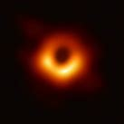

A black hole is a region in space where the pulling force of gravity
is so strong that light is not able to escape. The strong gravity
occurs because matter has been pressed into a tiny space. This
compression can take place at the end of a star's life. Some black
holes are a result of dying stars.

Because no light can escape, black holes are invisible. However,
space telescopes with special instruments can help find black holes.
They can observe the behavior of material and stars that are very
close to black holes.
Read more